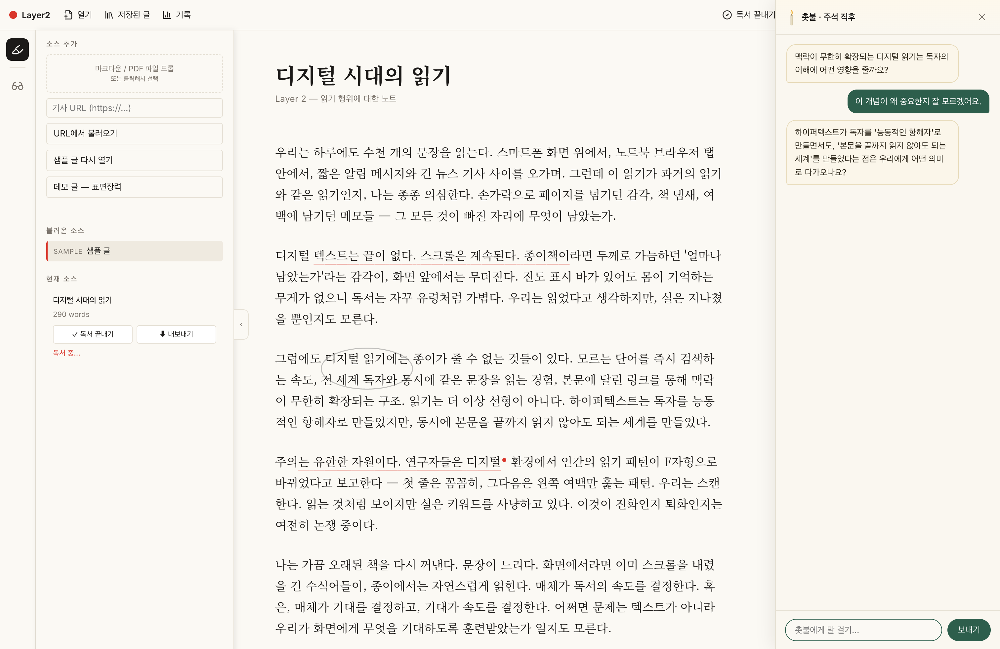
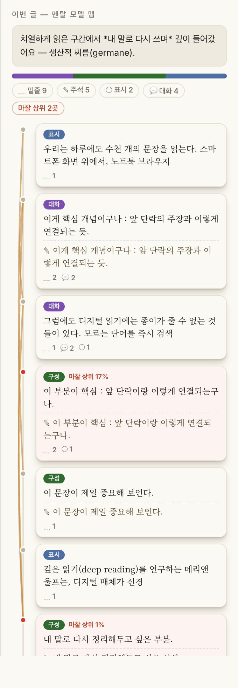

씨름한 흔적이 거울이 되는 읽기.
“안다”는 AI가 나를 꿰뚫는다는 뜻이 아닙니다. 내가 남긴 흔적을 모아, 내가 어떻게 읽는지 다시 비춘다는 뜻입니다.
종이책은 좁지만, 깊었다.
막히면 밑줄 치고, 메모하고, 옆에 그림 그리고, 뒷장 보다 앞장 다시. 어젯밤 읽던 걸 아침에 또. 비효율적이지만 책과 씨름하며 혼자 이해에 도달했다.
좌우로 넓어졌지만, 가운데가 비었다.
문장에 바로 밑줄 긋고 메모하던, 지지고 볶는 깊이가 얇아졌다.
Human-Document InteractionDocument-Human Interaction
흔적의 의미를 독자만 알던 종이책과 달리, 시스템이 그 흔적을 읽고 움직인다. 비어 있던 가운데, 지지고 볶는 영역을 복원한다.
어려운 글과 부딪힌 행동(왔다갔다·머묾·밑줄)을 읽기의 실패가 아니라 이해가 만들어지는 신호로 본다.
하이라이트·주석·체류·되돌아읽기를 모아 마찰로. 절대 점수가 아니라 이 글 안에서의 백분위.
촛불이 개념을 짚어 텍스트를 더 알게 하고, 맵·리포트가 내가 어떻게 읽는지 되비춘다.
읽는 행동을, 데이터로.
마찰 계수 = 이 글 안에서 상대적으로 치열했던 곳. 문서 내 백분위 상위 20%를 개입·리포트의 재료로.

개념이 가까운 단락이 곡선으로 이어진다. 시간 · 마찰 · 개념 · 상호작용처럼 여러 차원이던 읽기를, 한 장으로 정사영한 지형.
동의어·의역까지 잇는 의미 연결 — Gemini 임베딩 코사인.

정답보다, 경향.
흔적을 모아 경향을 비출 뿐, 정답을 내리지 않는다. 마찰도 절대 점수가 아니라 이 글 안에서 어디가 상대적으로 치열했나(문서 내 백분위). 검증도 정확도보다, 사용자가 자기 읽기를 납득하는지에 맞춘다.
효율로 사라진 지지고 볶기를 다시 살리고, 그 흔적을 모아 내가 어떻게 읽는 사람인지 조용히 비춘다.
= 읽기 위의 한 겹, Layer 2.
지난 며칠 만에
작동하는 형태까지.
약간 무리했습니다. 그래도 살아 있습니다.
다음 층 — 시간을 가로지르는 거울 : 재독 디프(지난 나와 비교) · 다회독 패턴. 여러 번의 씨름이 쌓이며 내가 어떤 독자인지 더 선명해진다.